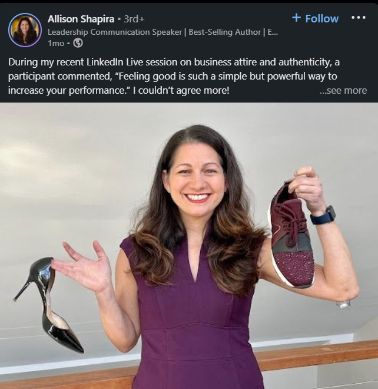

By: Allison Shapira
September 7, 2022
I remember my first keynote speech for a major Fortune 50 financial institution. I wanted to make a powerful first impression, so I went to Nordstrom and spent 10% of my speaking fee on Jimmy Choo shoes that would “demonstrate my business success.” I’ve since worn those black stilettos on stages around the world. And while they do indeed make me feel strong and powerful, they also hurt my feet.
Anyone who has worked in a corporate environment has learned the spoken and unspoken rules of attire in the workplace. From expensive suits and heels to subdued colors and styles, many of us dutifully fulfilled those expectations in order to move up in our careers — a reality that is especially true for women. Traditional business attire is safe, and the rules of etiquette are often selectively and unfairly enforced depending on someone’s reputation, relationships, or business results. It can feel easier to just put on a suit and focus on the work. But after two years of hastily throwing a business jacket over a T-shirt and sweatpants while letting people into our homes during the Covid-19 pandemic, our tolerance for conformity — and discomfort — has changed.
The business dress code is evolving. A recent Wall Street Journal article acknowledged the “workplace Wild West,” and Manhattan menswear store owner Ken Giddon discussed the uncertainty on NPR:
Now “the operative word is confusion…People really don’t know what to do.” With offices opening back up, [Giddon] has noticed folks are less certain about what to wear. “Do you wear dress slacks to work? Do you wear khakis? Can you wear jeans?” he said. “Nobody really has drawn the line, and nobody really knows what the right answer is.”
Have you been rethinking your work attire as you transition back into the office, but you’re worried about what others will think? Here are a few steps to try if you’re considering changing things up.
If it feels risky to independently make a wardrobe change, look at others in your office and observe how they dress. I started polling my clients to learn what they were observing in their offices. Recently, in a series of group coaching sessions, I asked (male) financial professionals if the dress codes were changing as they returned to the office: Most of them nodded their heads.
Their answers included:
“The last time I wore a tie (aside from when our CEO came to visit) was when I visited a client in a retirement home.”
They commented that clients were also dressing more casually, leading the dress code to go from formal business attire to what one executive called “country club casual.” You don’t have to follow what others are doing, but seeing others take those first steps may embolden you to make changes yourself.
Observe the boundaries as well. My clients noted that they were much more likely to dress down when they weren’t meeting with clients. Look for the nuances in how and when people dress down.
What if your colleagues aren’t noticeably changing their attire, but you feel strongly that you should? Take the lead: Try out one particular change and evaluate the response to it. Perhaps you drop the tie like my clients described above, or maybe you forgo the high heels for comfortable flats. Observe how (or if) people react and what the response is.
As a professional speaker, I have more leeway than if I were part of a large corporation. Still, my clients are large corporations, so my instinct has always been to play it safe. But I decided to experiment. Earlier this year, I was preparing for my first big-stage appearance in over two years, for the American Bankers Association. While packing for the event, I tried on my black stilettos but simply couldn’t bring myself to wear them. They felt “off” somehow. So I tried something new: Instead of wearing my traditional power shoes, I chose new sparkly sneakers to pair with my business dress.
I wore those sneakers for two straight days at the conference, and two amazing things happened. First, I felt even more powerful on stage than I had ever felt in heels; instead of worrying about the heels falling between the cracks on the podium, I could focus on my message and my audience. Second, I was constantly stopped by people who complimented me on the shoes. Elegantly dressed bankers approached me to ask hopefully, “Can we wear those now?”
I shared a photo of the sneakers on LinkedIn and was overwhelmed by the response. The post received over 130,000 views and 1,000 comments, mostly from my network of financial services professionals, and all were 100% supportive of the change. Comments ranged from “I thought it was just me who felt this way” to “comfort is a confidence-booster,” with a number of professionals sharing their new office footwear.
Taken from Allison Shapira's LinkedIn page
Lest you fear that dressing down might make you appear less successful to your peers or clients, fascinating research conducted by Silvia Bellezza, Francesca Gino, and Anat Keinan points in the opposite direction. In “The Red Sneakers Effect: Inferring Status and Competence from Signals of Nonconformity,” they found that, “Nonconforming behaviors, as costly and visible signals, can act as a particular form of conspicuous consumption and lead to positive inferences of status and competence in the eyes of others.”
Those sneakers might make you look even more successful than if you simply wore what others normally wear. However, the authors stress that this effect only happens when it’s obvious that the behavior is intentional — as opposed to simply misjudging the dress code. And what counts as “intentional” is in the eye of the beholder. That is why I recommend you start with observation and experimentation.
Now, it’s time for you to set your own dress code. A few months after my LinkedIn post, I came across a post by Naima Judge, a Managing Director & Market Investment Executive at the Bank of America Private Bank, whom I had met in the past. She posted a photo of herself walking confidently in white pants and a beautiful, bright yellow shirt with an African print. Her words were: “Today’s ‘business attire.’ That’s all. #carryon #Investmentexecutive”
Intrigued, I reached out to her to learn more about the change. She explained that, after the pandemic, she decided to eschew the traditional black and brown suits of the financial services industry for brighter colors, comfortable sneakers, and styles that felt more authentic to her.
In the beginning, it was about comfort, she said. But it soon became about something much deeper: a change in mindset around bringing her authentic self to the office. It was about wanting to represent herself in the clothes that she wore. She said that, as a woman of color in a very conservative industry and holding a role that not many women of color have, she wanted to consciously serve as a role model to others. She said it’s becoming more widely accepted to allow your attire to be an expression of who you are, as opposed to a formal environment to which you need to mold yourself.
| Instead of This | Try This |
I asked her, “What benefit do you think this has on you personally and on your organization?” Her answer was illuminating:
“It takes energy to not be your authentic self. If I can be more authentic, I can then use my energy to focus on my clients and uplift the people who report to me.”
Authenticity sends a powerful message, and what we are seeing post-pandemic is that comfort does as well. Business executives can set the tone, as Judge has done, by demonstrating to others how the office dress code is changing. They can also discuss the boundaries so that no one gets caught in the middle, just as I feared would happen to my stiletto heels while I was walking on stage.
At this very moment, as we continue our return to the office, we have a unique opportunity to rewrite the rules of office etiquette. What behaviors will we keep? Which outdated practices no longer serve us? Let’s create those rules ourselves and, in doing so, create space for others to bring their authentic selves to the office. We’ll feel more fulfilled and more confident as a result, and our feet will thank us.